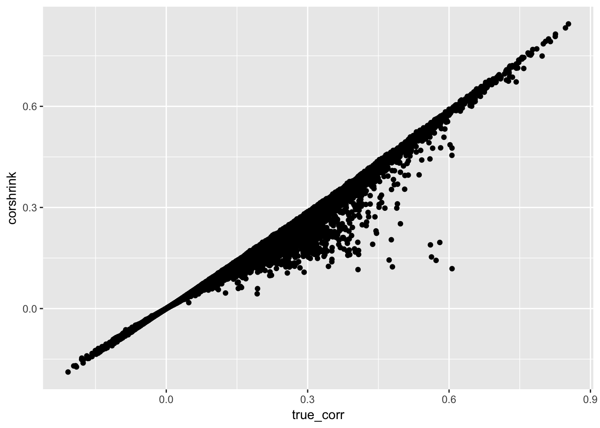
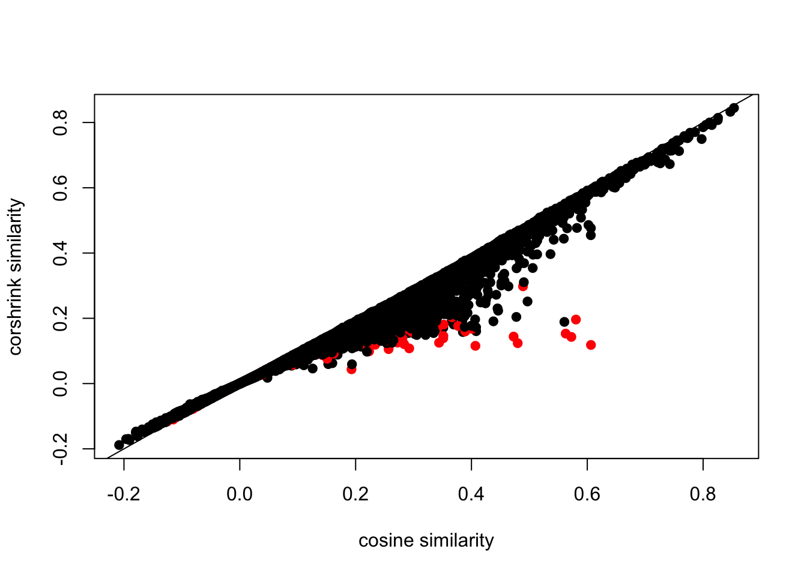
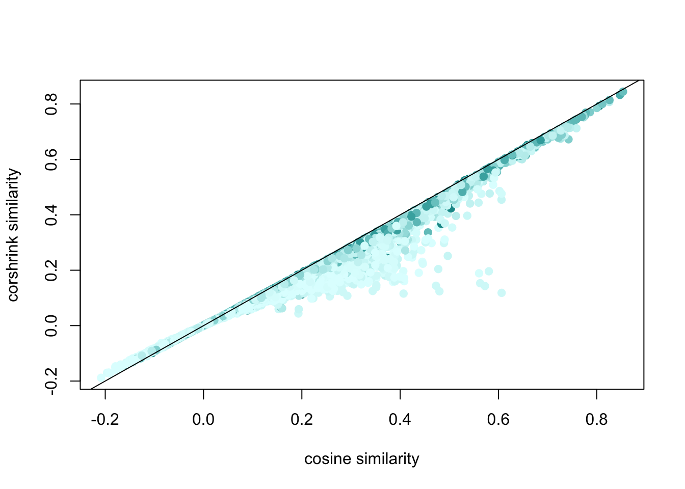

We load the cosine similarities on the original cookbooks, along with bootstrap samples.
dat <- get(load("../output/correlation_results_original_fake.rda"))original_cors <- dat$original[lower.tri(dat$original)]
original_z <- 0.5 * log((1+original_cors)/(1-original_cors))
fake_z_mat <- matrix(0,100,length(original_z))
for(m in 1:100){
tmp <- dat$fake[[m]][lower.tri(dat$fake[[m]])]
fake_z_mat[m,] <- 0.5 * log((1+tmp)/(1-tmp))
}
sd_fake_z_mat <- apply(fake_z_mat, 2, sd)
library(ashr)
out <- ash(original_z, sd_fake_z_mat, mixcompdist = "normal")## Due to absence of package REBayes, switching to EM algorithmash_out <- (exp(2*out$result$PosteriorMean) - 1)/(exp(2*out$result$PosteriorMean) + 1)
corshrink_mat <- matrix(0, dim(dat$original)[1], dim(dat$original)[2])
corshrink_mat[lower.tri(corshrink_mat)] <- ash_out
corshrink_mat_2 <- corshrink_mat + t(corshrink_mat) + diag(1, dim(dat$original)[1])
rownames(corshrink_mat_2) <- rownames(dat$original)
colnames(corshrink_mat_2) <- rownames(dat$original)library(ggplot2)
df <- data.frame("true_corr" = dat$original[lower.tri(dat$original)],
"corshrink" = corshrink_mat_2[lower.tri(corshrink_mat_2)])
p <- ggplot(df, aes(true_corr, corshrink))
p + geom_point()
word_pairs <- combn(rownames(dat$original), 2)idx1 <- which(word_pairs[1,] == "granola")
idx2 <- which(word_pairs[2,] == "granola")
idx <- c(idx1, idx2)color_ids <- rep(1, length(df$true_corr))
color_ids[idx] <- 2
df2 <- data.frame("true_corr" = df$true_corr,
"corshrink" = df$corshrink,
"color_idx" = color_ids)
colfunc <- colorRampPalette(c("floralwhite", "darkviolet"))
plot(df2$true_corr, df2$corshrink, bg = 2, col = c("black", "red")[df2$color_idx], pch = 19, cex = 1, xlab = "cosine similarity", ylab = "corshrink similarity")
abline(0,1)
sort(corshrink_mat_2["crisps",], decreasing = T)[1:20]## crisps oatmeal oats cookies cereal waffles barley
## 1.0000000 0.4546104 0.4439319 0.3507770 0.3386130 0.3134485 0.2916054
## oat raisin cake cakes wheat pancakes almond
## 0.2838988 0.2831237 0.2790836 0.2668060 0.2516118 0.2511620 0.2491677
## caramel banana scotch biscuits custard macaroon
## 0.2452080 0.2407370 0.2387094 0.2360240 0.2301865 0.2221511sort(dat$original["crisps",], decreasing = T)[1:20]## crisps granola oatmeal oats wheat lentil cookies
## 1.0000000 0.6063545 0.6060994 0.5594922 0.4968242 0.4775136 0.4127290
## barley banana biscuit cereal oat berry waffles
## 0.4090465 0.3949587 0.3932093 0.3875212 0.3741950 0.3623021 0.3564020
## cake raisin custard dates bananas potato
## 0.3452891 0.3357926 0.3267244 0.3256214 0.3221529 0.3206281sort(corshrink_mat_2["lentil",], decreasing = T)[1:20]## lentil lentils vermicelli beans noodles peas
## 1.0000000 0.6282002 0.4362812 0.4202289 0.4182970 0.4151525
## soup oatmeal barley cereal oats clam
## 0.4093720 0.3967317 0.3929695 0.3836107 0.3690337 0.3542033
## noodle lettuce cauliflower banana asparagus macaroni
## 0.3359165 0.3292501 0.3188050 0.3087588 0.3071539 0.3006642
## bananas oyster
## 0.2995356 0.2929810sort(dat$original["lentil",], decreasing = T)[1:20]## lentil lentils granola oatmeal oats vermicelli
## 1.0000000 0.6468821 0.5627163 0.5364558 0.4907969 0.4897411
## crisps noodles soup peas macaroni beans
## 0.4775136 0.4666460 0.4615776 0.4572223 0.4514855 0.4465940
## barley cereal tomato potato banana noodle
## 0.4412534 0.4303736 0.4293925 0.4250830 0.4233788 0.4017049
## clam bananas
## 0.3963113 0.3820332sort(corshrink_mat_2["pollock",], decreasing = T)[1:20]## pollock haddock prawn flounder lobsters herring shellfish
## 1.0000000 0.1907191 0.1748949 0.1736527 0.1736264 0.1723252 0.1711186
## salmon sirloin prawns squash potatoes fish cod
## 0.1709107 0.1667142 0.1646343 0.1640514 0.1628287 0.1605154 0.1579752
## crabs shrimps halibut steaks steak yam
## 0.1559714 0.1551557 0.1548041 0.1541103 0.1536393 0.1529237sort(corshrink_mat_2["haddock",], decreasing = T)[1:20]## haddock cod halibut fish salmon herring lobsters
## 1.0000000 0.8072189 0.7138981 0.7111818 0.6482865 0.5864298 0.4487071
## flounder chowder catfish prawns crabs shellfish scallops
## 0.4381676 0.4205394 0.4180896 0.4048288 0.3898614 0.3820280 0.3372526
## shrimps lobster clam shrimp clams sardines
## 0.3343697 0.3242320 0.3098969 0.3036952 0.2974139 0.2652800sort(dat$original["haddock",], decreasing = T)[1:20]## haddock cod halibut fish salmon herring flounder
## 1.0000000 0.8253001 0.7457319 0.7271895 0.6719394 0.6040069 0.5136126
## lobsters catfish chowder prawns pollock shellfish crabs
## 0.4742231 0.4701449 0.4412588 0.4388055 0.4379065 0.4357288 0.4200240
## shrimps lobster scallops shrimp clam clams
## 0.3688422 0.3682678 0.3678997 0.3399687 0.3306130 0.3240716We color the points based on how often at least one of the words occurs in the pair.
library(wordVectors)
dir <- "../data/cookbooks/"
out <- prep_word2vec(origin = dir, destination = "../data/cookbooks_pooled.txt", lowercase = T)## Beginning tokenization to text file at ../data/cookbooks_pooled.txt## Prepping ../data/cookbooks//amem.txt## Prepping ../data/cookbooks//amwh.txt## Prepping ../data/cookbooks//army.txt## Prepping ../data/cookbooks//aunt.txt## Prepping ../data/cookbooks//bart.txt## Prepping ../data/cookbooks//beec.txt## Prepping ../data/cookbooks//blue.txt## Prepping ../data/cookbooks//bost.txt## Prepping ../data/cookbooks//brkf.txt## Prepping ../data/cookbooks//buck.txt## Prepping ../data/cookbooks//cclu.txt## Prepping ../data/cookbooks//chas.txt## Prepping ../data/cookbooks//chin.txt## Prepping ../data/cookbooks//choc.txt## Prepping ../data/cookbooks//comm.txt## Prepping ../data/cookbooks//conf.txt## Prepping ../data/cookbooks//coow.txt## Prepping ../data/cookbooks//creo.txt## Prepping ../data/cookbooks//dcvb.txt## Prepping ../data/cookbooks//dish.txt## Prepping ../data/cookbooks//dome.txt## Prepping ../data/cookbooks//econ.txt## Prepping ../data/cookbooks//ency.txt## Prepping ../data/cookbooks//engl.txt## Prepping ../data/cookbooks//epia.txt## Prepping ../data/cookbooks//epib.txt## Prepping ../data/cookbooks//favd.txt## Prepping ../data/cookbooks//fcsc.txt## Prepping ../data/cookbooks//fish.txt## Prepping ../data/cookbooks//fofb.txt## Prepping ../data/cookbooks//fore.txt## Prepping ../data/cookbooks//fran.txt## Prepping ../data/cookbooks//frca.txt## Prepping ../data/cookbooks//frch.txt## Prepping ../data/cookbooks//gohk.txt## Prepping ../data/cookbooks//good.txt## Prepping ../data/cookbooks//grea.txt## Prepping ../data/cookbooks//gtte.txt## Prepping ../data/cookbooks//hand.txt## Prepping ../data/cookbooks//henr.txt## Prepping ../data/cookbooks//hosf.txt## Prepping ../data/cookbooks//hote.txt## Prepping ../data/cookbooks//hous.txt## Prepping ../data/cookbooks//ital.txt## Prepping ../data/cookbooks//jenn.txt## Prepping ../data/cookbooks//jewi.txt## Prepping ../data/cookbooks//lady.txt## Prepping ../data/cookbooks//ldnw.txt## Prepping ../data/cookbooks//linc.txt## Prepping ../data/cookbooks//mara.txt## Prepping ../data/cookbooks//mary.txt## Prepping ../data/cookbooks//matf.txt## Prepping ../data/cookbooks//miss.txt## Prepping ../data/cookbooks//neig.txt## Prepping ../data/cookbooks//notm.txt## Prepping ../data/cookbooks//oldv.txt## Prepping ../data/cookbooks//orie.txt## Prepping ../data/cookbooks//pach.txt## Prepping ../data/cookbooks//pcdg.txt## Prepping ../data/cookbooks//prac.txt## Prepping ../data/cookbooks//pres.txt## Prepping ../data/cookbooks//prho.txt## Prepping ../data/cookbooks//rore.txt## Prepping ../data/cookbooks//sauc.txt## Prepping ../data/cookbooks//scie.txt## Prepping ../data/cookbooks//sett.txt## Prepping ../data/cookbooks//sevf.txt## Prepping ../data/cookbooks//swed.txt## Prepping ../data/cookbooks//syst.txt## Prepping ../data/cookbooks//time.txt## Prepping ../data/cookbooks//virg.txt## Prepping ../data/cookbooks//wash.txt## Prepping ../data/cookbooks//whit.txt## Prepping ../data/cookbooks//wosu.txt## Prepping ../data/cookbooks//youn.txt## Prepping ../data/cookbooks//zuni.txtsentences<-scan("../data/cookbooks_pooled.txt","character",sep="\n");
sentences<-gsub("\\.","",sentences)
#Split sentence
words<-strsplit(sentences," ")
#Calculate word frequencies
words.freq<-table(unlist(words));indices <- match(rownames(dat$original), names(words.freq))
words.freq.foods <- words.freq[indices]num_occurrence_matrix <- sapply(words.freq.foods, function(l) pmin(l, words.freq.foods))
nsamp_vec <- num_occurrence_matrix[lower.tri(num_occurrence_matrix)]df3 <- data.frame("true_corr" = df$true_corr,
"corshrink" = df$corshrink,
"nsamp" = nsamp_vec)
colfunc <- colorRampPalette(c("lightcyan", "darkcyan"))
plot(df3$true_corr, df3$corshrink, bg = 2, col = colfunc(2000)[df3$nsamp], pch = 19, cex = 1, xlab = "cosine similarity", ylab = "corshrink similarity")
abline(0,1)
This R Markdown site was created with workflowr